文字
背景
行間


部活動報告
秋季千葉県高校野球大会ﾌﾞﾛｯｸ予選１回戦
 8月25日(火）残暑厳しい中、春の甲子園目指して秋の予選が始まりました。佐倉は着実に加点し、先発の藤田俊（２年）が安定した投球を見せ、佐倉東高に完勝しました。新チームになって初の公式戦でしたが、幸先良いスタートを切りました。
8月25日(火）残暑厳しい中、春の甲子園目指して秋の予選が始まりました。佐倉は着実に加点し、先発の藤田俊（２年）が安定した投球を見せ、佐倉東高に完勝しました。新チームになって初の公式戦でしたが、幸先良いスタートを切りました。 令和２年度弓道錬成大会兼高校３年生代替大会


（写真は本校での練習の様子も含みます）
千葉県公立高等学校テニス選手権大会３位
 8月10日～11日、白子町サニーコートで行われた令和２年度千葉県公立高等学校テニス選手権で、女子テニス部が見事３位という好成績を収めました。大会の実施に向けては厳戒な感染症対策がとられ、さらに厳しい暑さの中での試合となりましたが、部員たちは大健闘を見せました！
8月10日～11日、白子町サニーコートで行われた令和２年度千葉県公立高等学校テニス選手権で、女子テニス部が見事３位という好成績を収めました。大会の実施に向けては厳戒な感染症対策がとられ、さらに厳しい暑さの中での試合となりましたが、部員たちは大健闘を見せました！ 2020夏の高校野球千葉大会４回戦
８月８日（土）最高気温が３４℃に達した午後２時、野球部は４回戦の強豪、中央学院との一戦に臨みました。佐倉の先発は今大会、初先発の２年由川。初回は味方の好守に助けられ三者凡退で切り抜けます。二回裏から早くもエース長谷川にスイッチ。３塁打を浴びスクイズなど決められ５失点。三回表、佐倉は３番髙橋が四球選び、暴投が絡み１点を返します。五回表佐倉はエース長谷川に代打送るも無得点。その裏、佐倉は３番手藤田俊が登板。ランナー出すも無得点に抑えます。七回裏、中央学院はランナーを２塁におき、スリーベース放ち、佐倉は追加点許します。八回裏、中央学院は本塁打とタイムリーで２点追加。佐倉１ー８中央学院でコールドゲーム。ついに力尽きました。３年生にとって特別な夏となりましたが、様々な意味で生涯忘れられない夏になったと思います。本当にお疲れ様でした。
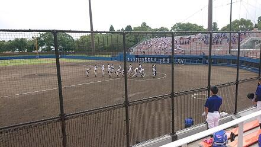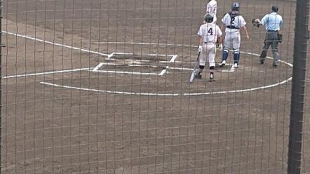
2020夏の高校野球千葉大会３回戦
８月６日（木）佐倉高野球部は長嶋茂雄記念岩名球場で３回戦に挑みました。佐倉の先発はエース長谷川。一回表に死球を与えてからリズム崩し、適時打されて２点を失いましたが,その裏,佐倉は無死満塁から内野ゴロの間に相手の悪送球も絡み、すぐに同点に。三回表、八千代は犠牲飛と内野ゴロの間に２点追加しますが、その裏、佐倉は２死満塁から７番高原の２塁打でランナー２人が生還し再び４ー４の振り出しに。四回裏、佐倉は２番齋藤の２塁打でついに勝ち越し。５ー４の佐倉リードで迎えた六回裏、１死満塁から４番髙橋渓が２点二塁打放ち、佐倉７点目。７回表、八千代は犠牲飛と内野ゴロの間に２点追加、１点差に詰め寄りました。佐倉は七回裏に８番佐久間のタイムリーで突き放します。８ー６のリードで迎えた八回表八千代の攻撃。佐倉は藤田俊が登板。三者凡退で切り抜けました。九回表も走者を出しましたが、藤田俊が抑え、8ー６で逃げ切りました。継投が見事にはまり、要所を抑え、チャンスをものにした佐倉高校が見事3回戦突破しました。４回戦は８日、同球場で千葉敬愛と中央学院の勝者と対戦します。引き続き熱い想いを球場に届けてください！ 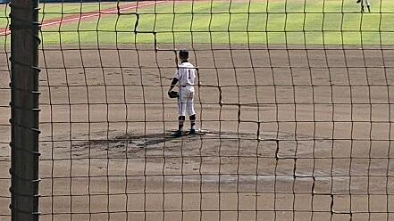
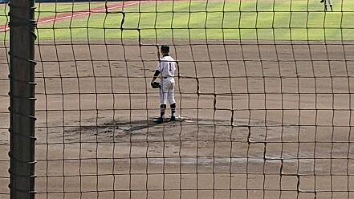
2020夏の高校野球千葉大会２回戦


2020夏季千葉県高等学校野球大会が始まりました。１回戦は岩名球場で四街道北高と対戦し、12-0（七回コールド）で勝ちました。一、二回はチャンス作るも相手の攻守に無得点。三回表、２番斉藤孝の三塁打で先制すると、さらに内野ゴロと押し出しでこの回一挙３点、試合の流れをつかみました。四回は３番主将高橋伯が走者一掃の三塁打などで３点を追加し、更に七回には高橋渓のタイムリーなどで４点を追加し、試合を決めました。投げては先発の３年長谷川が安定した投球を見せ、完封勝利。見事１回戦を突破しました。２回戦は６日に同球場で八千代高と対戦します。コロナの影響で無観客試合となりますが、皆様からの熱い想いを球場まで届けてください。頑張れ！佐倉高！
ESS部ディベート練習
8月21日に行われる千葉高校生英語ディベートサマーカップ大会に向けて、準備と練習を進めています。今年度の論題は、“Resolved: That the Japanese Government should ban production andsales of fossil-fueled cars, including hybrid cars, by 2035.”（日本政府は，ハイブリッド車も含む化石燃料車の製造と販売を2035年までに禁止すべきである。）です。
今年度のディベート大会は、全国大会も含め、全てオンラインで開催することが決定しています。そこで、今日は本校で導入しているG-Suiteの機能にあるClassroomやGoogle meetを活用し、オンラインでのやりとりを実践しました。（本校では各教室にWi-Fi環境を整備しています）機会の操作に迷いながらの練習でしたが、経験者の2年生はもちろん、初めてディベートに挑戦する１年生もしっかりと英語で意見のやりとりができました。本番に向け、さらなる情報収集と練習に励んで参ります。


佐倉高校音楽部 第10回定期演奏会の中止について

新型コロナウィルス感染拡大予防対策の影響により、３月29日に佐倉市民音楽ホールで開催予定の演奏会を中止することとなりました。関係各署をはじめ、御来場を予定されていた皆様には、御迷惑をおかけいたしますことをお詫び申し上げます。
一日も早い事態の終息と皆様の御健康をお祈りいたします。 音楽部一同
第７２回千葉県小・中・高校書初め展覧会で特別賞を受賞
 第７２回千葉県小・中・高校書き初め展覧会において、本校から学校代表として書道部２年の田坂璃乃さんと１年の村嶋理子さんの作品が地区審査を経て中央審査に進みました。その結果、田坂さんが上位４番目の賞となる県美術会長賞、村嶋さんが千葉日報社賞を受賞しました。
第７２回千葉県小・中・高校書き初め展覧会において、本校から学校代表として書道部２年の田坂璃乃さんと１年の村嶋理子さんの作品が地区審査を経て中央審査に進みました。その結果、田坂さんが上位４番目の賞となる県美術会長賞、村嶋さんが千葉日報社賞を受賞しました。 ダンス同好会公演
生徒の熱演に、多くの拍手喝采が送られました。北風の吹くなか、多くの生徒が集まりました。
 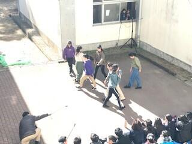
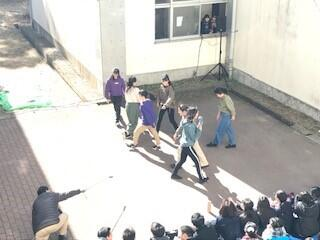
吹奏楽部 東関東アンサンブルコンテスト


（左：リハーサルの様子 右：本番後の記念撮影）
令和元年度女子バレーボール部新人戦ブロック大会結果

１月１１日（土）、１月１２日（日）にブロック予選が行われました。惜しくも第一代表は逃しましたが、県大会出場が決まりました。昨年度の財産が充分生きました。県大会でも頑張ります。
吹奏楽部（2019白銀クリスマスコンサート）


 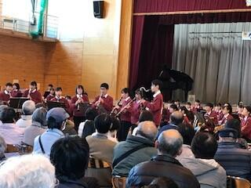
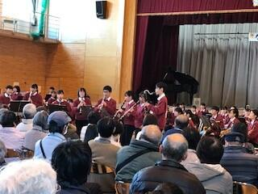 バスケットボール部 新人大会結果報告
女子バスケットボール部と男子バスケットボール部が共に二位という成績で、県大会に出場することが決定しました。
結果は以下の通りです。女子11人、男子8人、マネージャー2人という少人数ですが、1月の県大会に向けてコーチ・顧問とともに良い結果が残せるよう努力して参ります。
応援に来て下さった保護者の方々、OBOGの皆様、ありがとうございました。
男子 二回戦 ○佐倉63 ― 61八街×
準決勝 ○佐倉80 ― 48印旛明誠×
決勝 ×佐倉57 ― 58富里○
女子 一回戦 ○佐倉102 ― 22成田西陵×
二回戦 ○佐倉69 ― 55富里×
準決勝 ○佐倉70 ― 50佐倉西×
決勝 ×佐倉54 ― 85成田国際○


剣道部 佐倉市文化祭剣道大会

１１月３日（日）に行われた佐倉市文化祭剣道大会、高校生男子の部で齋藤（２年）が優勝､２位堂元（１年）３位永田（２年）、高校女子一般の部で柴田（１年）が優勝、２位に安津（１年）、３位に手塚が入賞しました。
女子ソフトテニス部 大会結果報告
 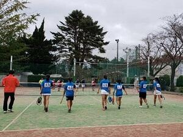
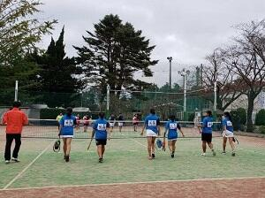 文芸部 本気BOOKフェスに出店しました
本校文芸部は18社の出版社さんと並んで出店させていただき、この日のために作成した文芸誌の販売や、過去に発行した部誌の展示を行いました。また、飛び入り参加でビブリオバトルにも挑戦しました。
地域の方々や出版社の皆さんと一緒にイベントを楽しみながら、学校の中では体験できない貴重な時間を過ごすことができました。お立ち寄りいただいた皆様、ご協力いただいた関係者の皆様に心より御礼申し上げます。
 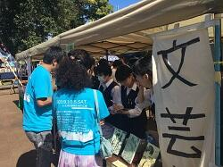
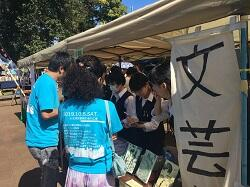 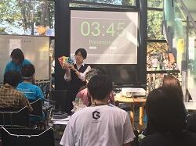
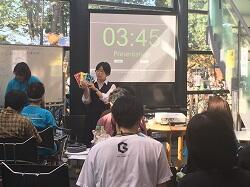
カヌー部 大会報告
◆令和元年度関東高等学校カヌー選手権選抜大会
Ｋ２ ５位・今西/小林京太② ７位・袋布新太郎②・柴田寛大②
Ｋ４ １位・今西/小林/袋布/柴田寛 ７位・小林寛都②/鈴木晟丈②/浅田悠希①/星野亮太①
Ｃ１ ３位・下田悠平② ５位・成川輔② ８位・高遠壮太②
Ｃ２ ２位・下田/高遠 ６位・成川/柴田雅生②
Ｃ４ １位・下田/高遠/成川/柳川陽尚② ５位・柴田雅/熊谷陸①/諏訪部修平①/神原圭佑①
ＷＫ２ ３位・遠藤/鈴木爽良② ９位・黒須あかり②/佐々木きなり①
ＷＫ４ ２位・遠藤/鈴木爽/黒須/佐々木 ５位・成毛水咲①/小林雛乃①/植木天音①/寺島颯生①
この経験と感謝を忘れずに、今冬に力を蓄え来夏に花咲くよう「点滴穿石！」


サッカー部 大会結果報告
◆２０１９年度全国高校サッカー選手権大会 千葉県予選
・トーナメント４回戦敗退
・新人戦シード権獲得（３回戦勝利チーム）


カヌー部 大会報告
６月８日（土）～６月９日（日） 精進湖カヌー競技場（山梨県）
男子総合２位！ 女子総合２位！
Ｋ１ ８位・今西悠人②
Ｋ２ ５位・藤崎雄太③/今西 ９位・笹浪陽樹③/市川幹太③
Ｋ４ ３位・藤崎/今西/市川/笹浪 ９位・綿貫光洋③/柴田寛大②/鈴木晟丈②/袋布新太郎②
Ｃ１ ５位・金子誠生③ ６位・樫村衛③ ７位・瀧澤陸人③ ８位・飯野一輝③
Ｃ２ ３位・樫村/外岡晴雪③ ８位・飯野/下田悠平②
Ｃ４ ２位・金子/瀧澤/外岡/下田 ４位・樫村/飯野/高遠壮太②/成川輔②
ＷＫ１ ５位・三好ひなた③
ＷＫ２ ５位・稲員真央③/三好
ＷＫ４ ２位・稲員/三好/折戸亜優③/伊藤萌③
◆第７４回国民体育大会関東ブロック大会カヌー競技（カヌースプリント）
７月１４日（日） 精進湖カヌー競技場（山梨県）
Ｋ４ ２位・藤崎雄太③/市川幹太③/今西悠人②/小林京太② 【国体出場権獲得】
Ｃ１ ３位・金子誠生③ 【国体出場権獲得】
Ｃ２ ４位・成川輔②/高遠壮太②
Ｋ４・Ｃ１選手は１０月４日（金）～１０月７日（月）に茨城県神栖市神之池特設カヌー競技場にて行われる第７４回国民体育大会カヌー競技会への出場権を獲得しました。
◆令和元年度全国高等学校総合体育大会カヌー競技大会
８月３日（土）～８月６日（火） 伊佐市菱刈カヌー競技場（鹿児島県）
Ｋ４-５００ｍ 今西/小林/藤崎雄太③/市川幹太③ 準決勝敗退
Ｃ１-５００ｍ 金子誠生③ 準決勝敗退
Ｃ２-５００ｍ 樫村衛③/外岡晴雪③ 準決勝敗退
Ｃ４-５００ｍ 金子/樫村/瀧澤陸人③/飯野一輝③ 決勝ＤＮＦ
※２００ｍ競技は台風の影響により中止
◆令和元年度関東高等学校カヌー選手権選抜大会千葉県予選
８月２４日（土） 黒部川カヌー場（千葉県香取市）
９種目２８名の選手が９月２１日（土）～９月２２日（日）山梨県精進湖カヌー競技場にて行われる関東高等学校カヌー選手権選抜大会への出場権を獲得しました。
保護者の皆様、たくさんの応援、写真提供等のご協力いただきありがとうございました。